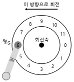
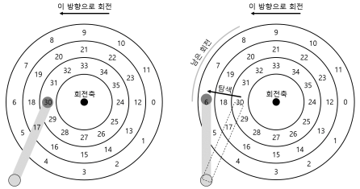
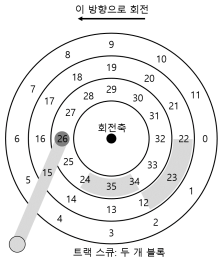
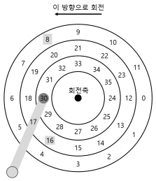

1. 하드 디스크 드라이브
- 하드 디스크 드라이브는 수세기 동안 컴퓨터 시스템의 영구적인 데이터 저장소였으며 파일 시스템 기술은 거의 대부분 하드 디스크 드라이브의 동작에 기반을 두고 개발되었다.
1.1 인터페이스
- 모든 현대 드라이브의 기본적인 인터페이스는 단순하다.
- 드라이브는 읽고 쓸 수 있는 매우 많은 수의 섹터들로 이루어져 있다.
- 그렇기 때문에 디스크를 섹터들의 배열로 볼 수 있으며 0부터 n-1이 드라이브의 주소 공간이 된다.
- 디스크 드라이브의 “계약 불문율”
- 드라이브의 주소 공간에서 가깝게 배치되어 있는 두 개의 블럭을 접근하는 것은 멀리 떨어져 있는 두 개의 블럭을 접근하는 것보다 빠르다고 가정한다.
- 연속적인 청크의 블럭을 접근하는 것(순차 읽기 쓰기)이 가장 빠르며 어떤 랜덤 접근 패턴보다 매우 빠르다는 것이다.
1.2 기본 구조
- 플래터(platter)
- 원형의 딱딱한 표면을 갖고 있는 플래터에 자기적 성질을 변형하여 데이터를 지속시킨다.
- 디스크는 하나 또는 그 이상의 플래터를 갖고 있으며 각각은 2개의 표면(surface)을 갖고 있다.
- 회전축(spindle)
- 플래터들은 회전축이라는 것으로 고정되어 있는데, 이 축은 모터와 연결 되어 있어서 플래터를 일정한 속도로 회전시킨다.
- 회전의 속도는 분당 회전 수(rotation per minute, RPM)로 측정된다.
- 트랙(track)
- 각 표면에 동심원을 따라 배치되어 있는 섹터들 위에 데이터가 부호화된다. 이 때 동심원 하나를 트랙이라고 한다.
- 디스크 헤드(disk head)
- 읽기와 쓰기 동작은 디스크 헤드를 통해 할 수 있고, 각 표면마다 헤드가 하나씩 존재한다.
- 디스크 암(disk arm)
- 디스크 헤드는 디스크암에 연결이 되어 있으며 이것을 통해서 헤드가 원하는 트랙 위에 위치하도록 이동시킬 수 있다.
1.3 간단한 디스크 드라이브

-
위의 그림은 트랙 하나와 헤드가 있는 디스크의 모습이다.
-
트랙이 하나 뿐인 간단한 디스크에서 요청이 어떻게 처리되는지 알아보자.
단일 트랙 지연 시간: 회전 지연
- 디스크 헤드 아래에 원하는 섹터가 위치하기를 기다린다.
- 이러한 기다림은 현대 드라이브에서도 흔하게 발생하며 I/O 서비스 시간에서 중요한 요소이기 때무에 회전형 지연(rotational delay) 때로는 회전 지연(rotation delay)라고도 한다.
멀티 트랙: 탐색 시간

- 읽기 요청을 처리하기 위해서 드라이브는 디스크 암을 먼저 올바른 트랙 위에 위치시킨다.
- 이 과정을 탐색(seek)이라고 한다.
- 회전과 더불어서 탐색은 가장 비싼 디스크 동작 중 하나다.
- 탐색은 여러 단계로 되어 있다.
- 가속 단계로 디스크 암이 움직이기 시작한다.
- 활주 단계로 디스크 암이 최고 속도로 움직인다.
- 감속 단계 이후에 안정화 단계에서 정확한 트랙위에 헤드가 조심스럽게 위치하게 된다.
- 드라이브가 정확한 트랙 위에 확실히 위치해야 하기 때문에 안정화 시간(settling time)은 중요하다.
그 외의 세부 사항

- 위의 그림은 트랙 비틀림(track skew)이라 불리는 기술을 채용하여 트랙의 경계를 지나서 순차적으로 존재하는 섹터들을 올바르게 읽을 수 있게 한다.
- 바깥 측에 공간이 더 많다는 구조적인 이유 때문에 바깥 측 트랙들에는 안쪽 트랙들보다 더 많은 섹터들이 있다는 것이 현실이다.
- 이러한 트랙들은 흔히 멀티 구역(multi-zoned) 디스크 드라이브라고 부른다.
- 마지막으로 현대 디스크 드라이브의 가장 중요한 부분은 캐시(cache)로서, 트랙 버퍼(track buffer)라고도 부른다.
- 작은 크기의 메모리로 드라이브가 디스크에서 읽거나 쓴 데이터를 보관하는 데 사용한다.
1.4 디스크 스케줄링
- I/O 비용이 크기 때문에 운영체제는 디스크에게 요청되는 I/O의 순서를 결정하는 데에 중요 역할을 담당했다.
- I/O 요청이 주어졌을 때 디스크 스케줄러는 요청을 조사하여 다음에 어떤 I/O를 처리할지 결정한다.
- 각 작업의 길이가 얼마나 될지 알 수 없는 작업 스케줄링과 다르게 디스크 스케줄링의 경우, 디스크 요청 작업이 얼마나 길지를 꽤 정확히 예측할 수 있다.
- 디스크 스케줄러는 SJF(shortest job first)의 원칙을 따르려고 노력한다.
SSTF: 최단 탐색 시간 우선
- 최단 탐색 시간 우선(shortest-seek-time-first, SSTF)는 트랙을 기준으로 I/O 요청 큐를 정렬하여 가장 가까운 트랙의 요청이 우선 처리되도록 한다.
- 하지만, 드라이브의 구조는 호스트 운영체제에게 공개되어 있지 않으며 운영체제는 그저 블럭들의 배열로만 인식한다.
- 운영체제는 SSTF를 사용하는 대신 가장 가까운 블럭 우선(Nearest-block-first, NBF) 방식을 사용하면 된다.
- 하지만 이 탐색 방법은 기아 현상(starvation)이 발생한다.
- 계속해서 인접한 트랙만 왔다 갔다 하면 저 멀리 있는 트랙은 접근할 수 없다.
엘리베이터(SCAN 또는 C-SCAN)
- SCAN이라고 불렸던 이 알고리즘은 트랙의 순서에 따라 디스크를 앞뒤로 가로지르며 요청을 서비스한다.
- 디스크를 한번 가로지르는 것을 스위프(seep)라고 부른다.
- F-SCAN은 스위프하는 동안에 큐를 동결시킨다.
- 디스크를 스위프 하는 동안에 새로운 요청이 도착하면 다음 번 서비스 될 큐에 삽입된다.
- C-SCAN은 또 다른 일반적인 변종으로 Circular SCAN의 약자이다.
- 밖에서 안으로만 스위프한다.
- 그리고 한번 스위프하면 다시 밖으로 돌아간다.
SPTF: 최단 위치 잡기 우선
- 최단 위치 잡기 우선(shortest positioning time first) 또는 SPTF(때로는 최단 접근 시간 우선(shortest access time first, SATF)을 알아보자

- 만약 위의 그림에서 블럭 16이 회전으로 인해 대기시간이 길어진다면 8을 먼저 접근하는 것이 비용이 저렴해진다.
- 이러한 문제를 해결하기 위한 개념이다.
- 하지만 트랙의 경계가 어디인지 현재 디스크 헤드가 어디에 있는지를 정확히 알 수 없기 때문에 운영체제에서 이것을 구현하기 매우 어렵다.
- 그렇기 때문에 SPTF는 드라이브 내부에서 실행된다.
다른 스케줄링 쟁점들
- 현대 시스템에서 디스크는 대기 중인 여러 개의 요청들을 수용할 수 있으며 복잡한 내부 스케줄러를 자체적으로 갖고 있다.
- 디스크는 상세한 트랙 배치 정보와 헤드의 위치에 대한 내부 지식을 사용하여 최선의(SPTF) 순서로 정렬한다.
- 디스크 스케줄러가 수행하는 중요한 또 다른 관련 작업은 I/O병합(I/O merging)이다.
- 예를들어 33번, 8번 그리고 34번을 읽는 연속된 요청이라면, 33번과 34번을 병합하여 두 블럭의 길이의 요청으로 만든다.
- 오버헤드를 줄일 수 있기 때문에 운영체제에서 병합은 특히 중요하다.